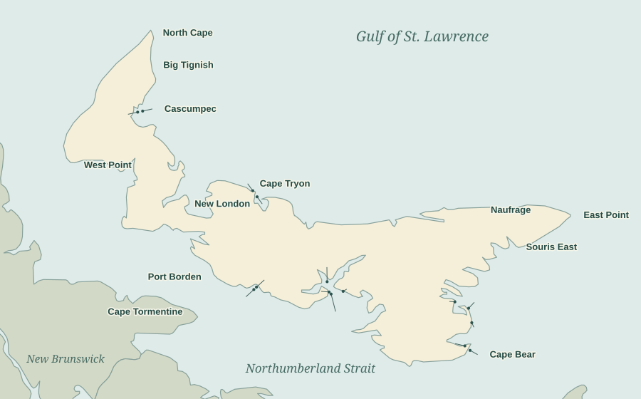
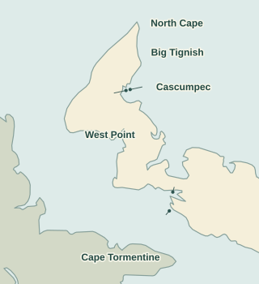
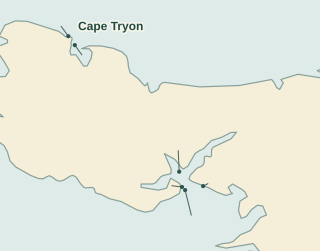
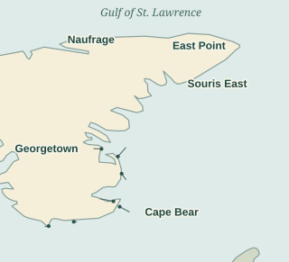

Two Lights in Line: A Postcard Map of Prince Edward Island
The front light at Summerside stands on the wharf. The rear light rises among trees. Put the two postcards side by side and the repeated lettering is hard to miss. Follow it around the Island and it leads to fifty-two different photographs of the coast, and another six across the water at Cape Tormentine.
The postcard coast
Choose a numbered dot to see the postcards from that place. Each dot marks a harbour or headland; several lights can share one stop.

1Alberton (Northport)2Annandale3Big Tignish4Blockhouse Point5Brighton Beach6Cape Bear7Cape Egmont8Cape Tormentine, N.B.9Cape Tryon10Covehead11Darnley Point12Douse Point13East Point14Georgetown (St. Andrews Point)15Graham Pond16Haszard Point17Little Sands18Miminegash19Murray Harbour20Naufrage (Shipwreck Point)21New London22North Cape23North Rustico24Panmure Island25Port Borden26Sea Cow Head27Souris East28St. Peters Harbour29Summerside Harbour30Tracadie31Victoria (Wright’s Range)32Warren Farm (Warren Cove)33West Point34Wood IslandsWestern Island & Cape Tormentine

1Alberton (Northport)3Big Tignish7Cape Egmont8Cape Tormentine, N.B.11Darnley Point18Miminegash22North Cape25Port Borden26Sea Cow Head29Summerside Harbour33West PointCentral Island & Charlottetown Harbour

4Blockhouse Point5Brighton Beach9Cape Tryon10Covehead12Douse Point16Haszard Point21New London23North Rustico30Tracadie31Victoria (Wright’s Range)32Warren Farm (Warren Cove)Eastern Island

2Annandale6Cape Bear13East Point14Georgetown (St. Andrews Point)15Graham Pond17Little Sands19Murray Harbour20Naufrage (Shipwreck Point)24Panmure Island27Souris East28St. Peters Harbour34Wood Islands34 places · 58 photographs · 70 cards. Positions are approximate and refer to the coast shown on the cards; some towers have moved.
Find a place by name · alphabetical map key
- 01 · Alberton (Northport)
- 02 · Annandale
- 03 · Big Tignish
- 04 · Blockhouse Point
- 05 · Brighton Beach
- 06 · Cape Bear
- 07 · Cape Egmont
- 08 · Cape Tormentine, N.B.
- 09 · Cape Tryon
- 10 · Covehead
- 11 · Darnley Point
- 12 · Douse Point
- 13 · East Point
- 14 · Georgetown (St. Andrews Point)
- 15 · Graham Pond
- 16 · Haszard Point
- 17 · Little Sands
- 18 · Miminegash
- 19 · Murray Harbour
- 20 · Naufrage (Shipwreck Point)
- 21 · New London
- 22 · North Cape
- 23 · North Rustico
- 24 · Panmure Island
- 25 · Port Borden
- 26 · Sea Cow Head
- 27 · Souris East
- 28 · St. Peters Harbour
- 29 · Summerside Harbour
- 30 · Tracadie
- 31 · Victoria (Wright’s Range)
- 32 · Warren Farm (Warren Cove)
- 33 · West Point
- 34 · Wood Islands
Two lights in line
There are geese in the grass at St. Andrews Point. Two have their heads up; the rest are busy feeding. Beyond them stands a little white building with a lantern, scarcely taller in the picture than a goose in the foreground. The caption calls it the front range light for Georgetown. Anyone who came across this card on its own might put it away as a farm scene. Lay that photograph beside the Georgetown rear light and you start to see the shore as a sailor would.
A single light tells you where to look. Two lights, one behind the other, can tell you which way to steer. From the water, the mariner brings the nearer, lower light directly beneath the more distant, higher one. If the lights open out to either side, the vessel has moved off that line. Seen from the land, the two structures needn’t look much alike. At North Rustico the front light of the outer range hangs inside an open frame: a roof and four walls would have been quite beside the point. At Souris East one card shows a tower high on the shore, while another shows a much smaller breakwater light on braced legs, with a ladder up the middle.
Summerside had a particular reason to want that line. A light went into service at the railway wharf in 1877. Steamers approaching at night still had trouble finding their way in. In 1895 a rear light began operating on the Stavert farm; the agreement for the land barred the owners from putting anything in the way of the light. That is a striking thing to buy along with a patch of farmland: a clear view all the way out to sea. The rear tower was enclosed in 1904 and raised in 1916. Look at 0004 and you can pick out the windows one above the other between the trees. The squat front tower on 0003 makes quite a companion portrait. The Lighthouse Society’s Summerside history.
At Wood Islands the cards distinguish three buildings that a visitor might remember simply as “the lighthouse.” The main light, in service from 1876, had a dwelling attached. The keeper’s family lived there. The two small range lights were built in 1902. On the front-light card a dark doorway faces the camera and chains stretch away on either side. The rear light rises out of the vegetation; the main tower has a house plainly visible beside it. In 1950 that dwelling was renovated for keeper George Stewart and his family. There was a household to look after here as well as a light. The Wood Islands station history.
The clue on the back
Turn over the Summerside front light. At upper left, outlined letters spell PHOTO POST CARD. A straight line divides the card; ADDRESS sits to its right. The dotted stamp box reads Kodak at the top and Paper at the bottom. The same arrangement turns up again and again. That stock is a dating clue: the University of Delaware’s postcard exhibition dates this back design to 1950 onward. It gives us an earliest likely date for the prints. A negative could have been made earlier and printed more than once. None of the seventy cards has a recorded postmark to narrow that down.

Big Tignish lets us watch that happen. On 0815 there is more water at the left and a dark shadow at the edge of the print. On 4246 the picture starts closer to the wharf; the three figures are easier to see. Their feet are in precisely the same positions on the planks. Those are two prints of one photograph. At Murray Harbour the opposite is true: two fronts carry much the same caption, but the camera looks at the wharf and the tower from different angles. Both belong in the album.
One card even has a name on it. Blockhouse Point, 3964, is addressed in pencil to Chas. F. Schell, 48 Ash Street, Braintree, Massachusetts. A cover illustrated in the postal-history journal Nautical Times gives the same name and address; it was marked aboard the steamer North Shore in August 1948. And in 1973 Schell himself placed a wanted notice for warship negatives. He wanted the whole ship in the frame and enough detail to identify her by name. That tells us something about the man whose name is on the card. It still leaves the person behind the camera unknown. Kodak made the paper; none of the cards names a publisher.

There is a reason to keep even the least imposing lights in view. At St. Peters Harbour, sand closed the old channel after a new opening broke through the Greenwich peninsula. Red Head became the preferred landing. The local lighthouse society sets out aerial photographs from 1958 and 1968 in which you can follow the change. The little tower on 3961 has survived on paper with its steps, its railing and the spindly trees around it. What disappeared was the very passage it had been put there to mark.
The postcards, A–Z
Select a photograph to open its catalogue record and turn the card over. Where two prints survive, the second card number appears beneath the first.
 Alberton (Northport)Front light, North Port RangeMap 01 · Card 3831
Alberton (Northport)Front light, North Port RangeMap 01 · Card 3831 AnnandaleFront range lightMap 02 · Card 0100
AnnandaleFront range lightMap 02 · Card 0100 AnnandaleRear range lightMap 02 · Card 0691
AnnandaleRear range lightMap 02 · Card 0691 Big TignishInner range light on the wharfMap 03 · Card 4246Other print · 0815
Big TignishInner range light on the wharfMap 03 · Card 4246Other print · 0815 Blockhouse PointLight at the entrance to Charlottetown HarbourMap 04 · Card 3964
Blockhouse PointLight at the entrance to Charlottetown HarbourMap 04 · Card 3964 Brighton BeachFront range lightMap 05 · Card 0195
Brighton BeachFront range lightMap 05 · Card 0195 Brighton BeachRear range lightMap 05 · Card 0197
Brighton BeachRear range lightMap 05 · Card 0197 Cape BearTower and attached dwellingMap 06 · Card 0662
Cape BearTower and attached dwellingMap 06 · Card 0662 Cape BearTower seen from belowMap 06 · Card 1116
Cape BearTower seen from belowMap 06 · Card 1116 Cape EgmontLighthouse and dwellingMap 07 · Card 0663
Cape EgmontLighthouse and dwellingMap 07 · Card 0663 Cape Tormentine, N.B.Entrance Range · frontMap 08 · Card 3447
Cape Tormentine, N.B.Entrance Range · frontMap 08 · Card 3447 Cape Tormentine, N.B.Entrance Range · rearMap 08 · Card 3776
Cape Tormentine, N.B.Entrance Range · rearMap 08 · Card 3776 Cape Tormentine, N.B.Indian Point Range · frontMap 08 · Card 1947
Cape Tormentine, N.B.Indian Point Range · frontMap 08 · Card 1947 Cape Tormentine, N.B.Indian Point Range · rearMap 08 · Card 1948
Cape Tormentine, N.B.Indian Point Range · rearMap 08 · Card 1948 Cape Tormentine, N.B.Wharf Range · frontMap 08 · Card 1945
Cape Tormentine, N.B.Wharf Range · frontMap 08 · Card 1945 Cape Tormentine, N.B.Wharf Range · rearMap 08 · Card 2243
Cape Tormentine, N.B.Wharf Range · rearMap 08 · Card 2243 Cape TryonThe light above the houseMap 09 · Card 0661
Cape TryonThe light above the houseMap 09 · Card 0661 CoveheadRange lights at StanhopeMap 10 · Card 0905Other print · 4004
CoveheadRange lights at StanhopeMap 10 · Card 0905Other print · 4004 Darnley PointFront range lightMap 11 · Card 0774
Darnley PointFront range lightMap 11 · Card 0774 Douse PointFront range light, Orwell BayMap 12 · Card 1334
Douse PointFront range light, Orwell BayMap 12 · Card 1334 Douse PointRear range light, Orwell BayMap 12 · Card 1336
Douse PointRear range light, Orwell BayMap 12 · Card 1336 East PointTower and neighbouring houseMap 13 · Card 3966
East PointTower and neighbouring houseMap 13 · Card 3966 Georgetown (St. Andrews Point)Front range light, with geese in the foregroundMap 14 · Card 1096Other print · 3963
Georgetown (St. Andrews Point)Front range light, with geese in the foregroundMap 14 · Card 1096Other print · 3963 Georgetown (St. Andrews Point)Rear range lightMap 14 · Card 3807
Georgetown (St. Andrews Point)Rear range lightMap 14 · Card 3807 Graham PondWharf and lightMap 15 · Card 1289
Graham PondWharf and lightMap 15 · Card 1289 Haszard PointRear range lightMap 16 · Card 1337
Haszard PointRear range lightMap 16 · Card 1337 Little SandsThe wharf lightMap 17 · Card 3832
Little SandsThe wharf lightMap 17 · Card 3832 MiminegashFront range light along the wharfMap 18 · Card 4143Other print · 0866
MiminegashFront range light along the wharfMap 18 · Card 4143Other print · 0866 MiminegashRear range lightMap 18 · Card 0863
MiminegashRear range lightMap 18 · Card 0863 Murray HarbourFront range light, broadside viewMap 19 · Card 0860Other print · 3446
Murray HarbourFront range light, broadside viewMap 19 · Card 0860Other print · 3446 Murray HarbourFront range light, looking up from the timbersMap 19 · Card 1123
Murray HarbourFront range light, looking up from the timbersMap 19 · Card 1123 Murray HarbourRear range lightMap 19 · Card 1362
Murray HarbourRear range lightMap 19 · Card 1362 Naufrage (Shipwreck Point)Harbour light and jettyMap 20 · Card 0917
Naufrage (Shipwreck Point)Harbour light and jettyMap 20 · Card 0917 Naufrage (Shipwreck Point)Shipwreck Point lighthouseMap 20 · Card 3972
Naufrage (Shipwreck Point)Shipwreck Point lighthouseMap 20 · Card 3972 New LondonFront range lightMap 21 · Card 3780
New LondonFront range lightMap 21 · Card 3780 New LondonRear range lightMap 21 · Card 0916
New LondonRear range lightMap 21 · Card 0916 North CapeTower and station buildingsMap 22 · Card 3965Other print · 3712
North CapeTower and station buildingsMap 22 · Card 3965Other print · 3712 North RusticoFront light, outer rangeMap 23 · Card 1393
North RusticoFront light, outer rangeMap 23 · Card 1393 Panmure IslandPanmure Head lightMap 24 · Card 3968
Panmure IslandPanmure Head lightMap 24 · Card 3968 Port BordenFront range lightMap 25 · Card 3803
Port BordenFront range lightMap 25 · Card 3803 Port BordenRear range lightMap 25 · Card 3804
Port BordenRear range lightMap 25 · Card 3804 Sea Cow HeadLighthouse and buildingsMap 26 · Card 0907
Sea Cow HeadLighthouse and buildingsMap 26 · Card 0907 Souris EastBreakwater lightMap 27 · Card 3806
Souris EastBreakwater lightMap 27 · Card 3806 Souris EastLighthouse above the shoreMap 27 · Card 4209
Souris EastLighthouse above the shoreMap 27 · Card 4209 St. Peters HarbourSt. Peters light, among the treesMap 28 · Card 3961Other print · 0903
St. Peters HarbourSt. Peters light, among the treesMap 28 · Card 3961Other print · 0903 Summerside HarbourFront range lightMap 29 · Card 0003Other print · 3445
Summerside HarbourFront range lightMap 29 · Card 0003Other print · 3445 Summerside HarbourRear range lightMap 29 · Card 0004
Summerside HarbourRear range lightMap 29 · Card 0004 Summerside HarbourIndian Point light, as captionedMap 29 · Card 3969
Summerside HarbourIndian Point light, as captionedMap 29 · Card 3969 TracadieInner range lightsMap 30 · Card 3711Other print · 3805
TracadieInner range lightsMap 30 · Card 3711Other print · 3805 Victoria (Wright’s Range)Front range lightMap 31 · Card 4208Other print · 0817
Victoria (Wright’s Range)Front range lightMap 31 · Card 4208Other print · 0817 Victoria (Wright’s Range)Rear range lightMap 31 · Card 3808
Victoria (Wright’s Range)Rear range lightMap 31 · Card 3808 Warren Farm (Warren Cove)Front range lightMap 32 · Card 0191
Warren Farm (Warren Cove)Front range lightMap 32 · Card 0191 Warren Farm (Warren Cove)Rear range lightMap 32 · Card 0193
Warren Farm (Warren Cove)Rear range lightMap 32 · Card 0193 West PointThe striped lighthouseMap 33 · Card 3967
West PointThe striped lighthouseMap 33 · Card 3967 West PointFront range light, West Point WharfMap 33 · Card 3921
West PointFront range light, West Point WharfMap 33 · Card 3921 Wood IslandsFront range lightMap 34 · Card 4244Other print · 0812
Wood IslandsFront range lightMap 34 · Card 4244Other print · 0812 Wood IslandsRear range lightMap 34 · Card 3829
Wood IslandsRear range lightMap 34 · Card 3829 Wood IslandsLighthouse and keeper’s dwellingMap 34 · Card 3970Other print · 0816
Wood IslandsLighthouse and keeper’s dwellingMap 34 · Card 3970Other print · 0816
About this map and the count
The album groups surviving photographs by their subjects, caption lettering and matching Kodak backs. Twelve photographs occur twice. The count describes this collection; an original publisher’s list has yet to turn up. Cape Tormentine’s six photographs are included as the New Brunswick part of the group. None of those six is counted among the fifty-two Island views.
The outline is from Natural Earth. The mapped.earth light list and the Canadian Coast Guard list help locate today’s stations. Historical ranges were checked against the 1901 Canadian list of lights and local station histories. The Douse Point dot is on Orwell Bay, where the lights guided vessels, rather than at their later location near Murray River.